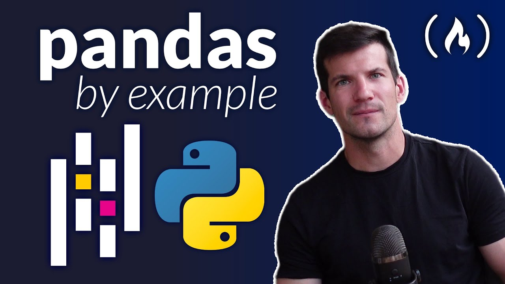
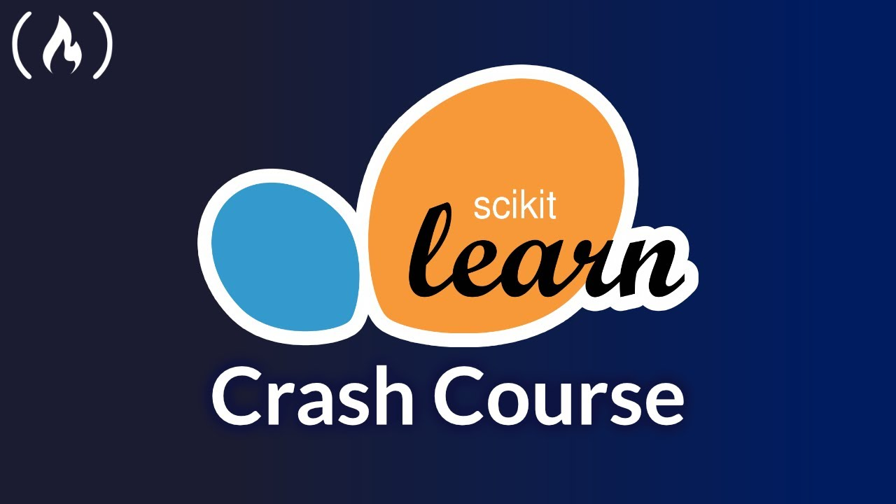
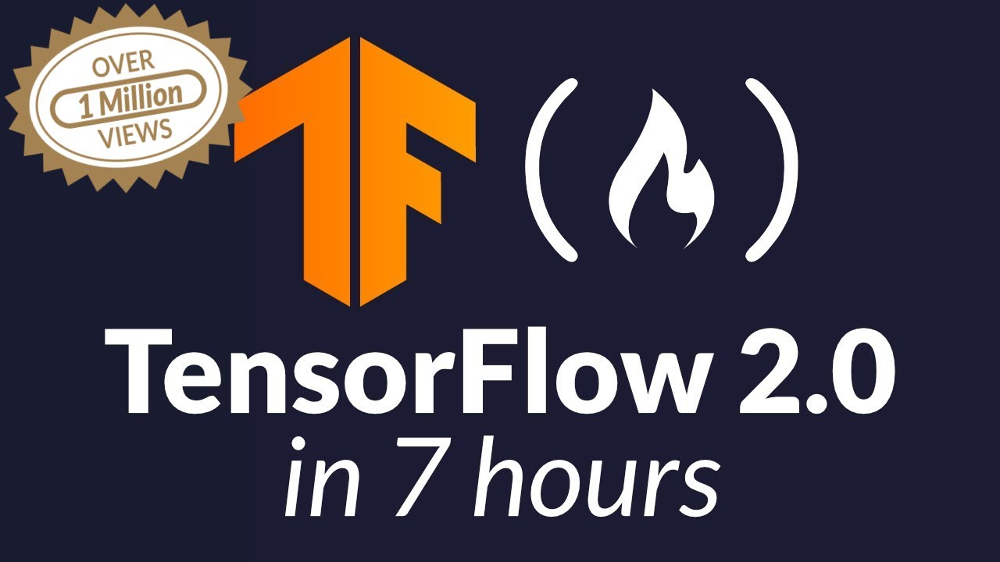

This video is a tutorial on how to use pandas for data analysis and data science. It is a full course for beginners and covers all the most important aspects of data management with pandas, including data analysis, data cleaning, and data wrangling.
The video starts with an introduction to pandas and then goes on to cover how to use pandas to read data from different sources, such as CSV files and databases. It also covers how to clean data, such as how to handle missing values and outliers. Once the data is clean, the video shows how to use pandas to analyze the data, such as how to calculate means, medians, and standard deviations. Finally, the video shows how to use pandas to create visualizations of the data, such as histograms and bar charts.

This video is a crash course on scikit-learn, a machine learning library for Python. The speaker, Vincent, goes over the general flow of how to use scikit-learn for making predictions. He also talks about some of the challenges of using machine learning in practice.
Scikit-learn overview: Scikit-learn is a popular machine learning library for Python that provides a wide range of tools for tasks like data preprocessing, model training, and evaluation.
General workflow: The general workflow for using scikit-learn involves loading data, splitting it into training and testing sets, training a model on the training data, and then evaluating the model on the testing data.

TensorFlow, an open-source library from Google, empowers you to build and train amazing things like robots, image recognition apps, and self-driving cars! Think of it as a toolbox for data, where numbers (tensors) flow through like pipes, transformed by layers of "building blocks" (neural networks) you design. Keras, a friendly sidekick, simplifies building these networks. TensorFlow can learn from massive datasets, finding patterns you might miss, and make predictions based on what it's learned. Whether you're a beginner or a pro, TensorFlow has tools for everyone, from easy tutorials to powerful custom code.